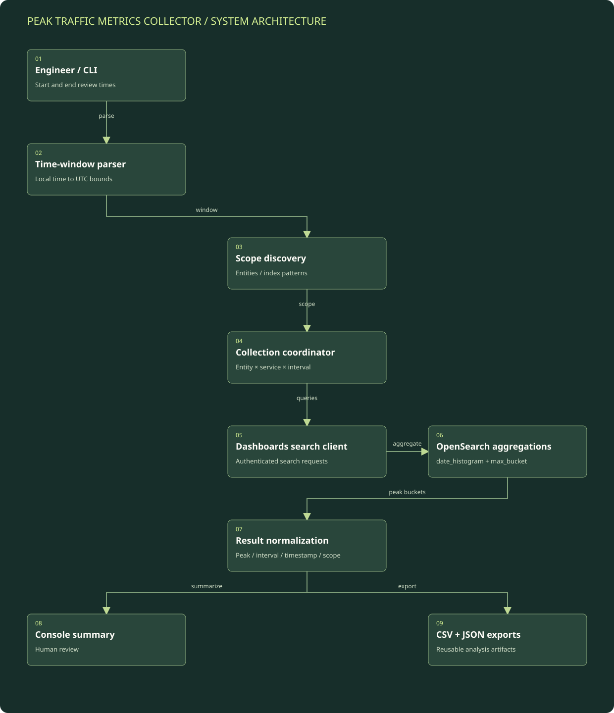

Accept and normalize the review window
The command line accepts start and end times in the supported local time zone. The parser converts them to UTC epoch milliseconds and makes the selected end minute inclusive.
Detailed architecture / Capacity and peak-event evidence
A Python collector that discovers reporting entities and log indexes, computes peak request counts at multiple intervals in OpenSearch, and exports a consolidated result.
Component layout and data flow.
Boxes represent logical modules and external systems; they do not imply a separate server for each box. On a narrow screen, scroll the diagram horizontally or open the full-size SVG. The tables below provide a text equivalent.

| Component | Responsibility | Boundary / qualification |
|---|---|---|
| CLI time parser | Normalizes the chosen review period to query bounds. | One shared window supports comparability across collection calls. |
| Discovery functions | Find entities and candidate index patterns in each configured environment. | Discovery selects the relevant index for each reporting entity. |
| Collection coordinator | Iterates over the configured service/interval combinations. | The reviewed script executes the collection loops sequentially. |
| Search-side aggregation | Uses a fixed-interval histogram and maximum-bucket aggregation. | Peak interval counts must not be confused with daily totals or a rolling rate. |
| Output adapters | Write summary, CSV, and JSON results. | Exports preserve the interval, peak count, and corresponding timestamp. |
The command line accepts start and end times in the supported local time zone. The parser converts them to UTC epoch milliseconds and makes the selected end minute inclusive.
For each configured environment, the collector queries available reporting entities and discovers a corresponding index pattern. A wildcard fallback is present when discovery does not find a specific pattern.
The collector iterates over configured time-bucket intervals and service categories for each entity, applying the same time bounds to the queries.
A date histogram groups matching documents by fixed interval; a max_bucket pipeline aggregation returns the largest bucket and its key. The collector also records supporting counts and scope metadata.
Successful results are combined, summarized in the console, and written to timestamped CSV and JSON files. Failed queries are reported and do not become fabricated metric rows.